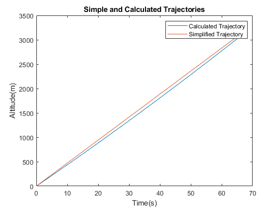

Contents
Code for Problem 1
clear all
clc
m = 78000;
W = 9.81*m;
fnss = 261000;
cl0 = .2;
cd0 = 0.016;
S = 125;
eps = 0.048;
cla = 5.7296;
tsfc = 3.552e-05;
g = 9.81;
h = 0;
vt = 128.6;
p = @ (h) 101.29 * (((15.04 - .00649*h) + 273.1)/288.08)^5.526;
rho = @ (h) (101.29 * (((15.04 - .00649*h) + 273.1)/288.08)^5.526)/(.2869 * (15.04 - .00649*h + 273.1));
FN = (p(h)/p(0))*fnss;
sigma = @ (h) rho(h)/rho(0);
dsigma = @ (h) (sigma(h) - sigma(h-1));
qbar = .5*rho(h)*(vt^2)*S;
dfpadt = @ (h,gamma) (1/(vt*m))*(((qbar*cl0) - m*g) + ((FN + qbar*cla)/cla)*(((1/sqrt(eps))*((FN - (m*(g + .5*dsigma(h)*((vt.^2))/sigma(h)))*gamma)/qbar).^.5) - cl0));
h = 0;
y = @ (gamma) dfpadt(h,gamma);
gammai = fzero(y,.24);
dvtdt = -.5*dsigma(h)*((vt^2)/sigma(h))*sin(gammai);
t = 0;
deltat = 0.1;
gamma = gammai;
h = 0;
dhdt = vt*sin(gamma);
iter = 1;
while h < 3048
FN = (p(h)/p(0))*fnss;
dhdt1 = dhdt;
rvt(iter) = vt;
rh(iter) = h;
vt = vt + dvtdt*deltat;
gamma = gamma + dfpadt(h,gamma)*deltat;
dhdt = vt*sin(gamma);
avedhdt = (dhdt1 + dhdt)/2;
h = h + avedhdt*deltat;
t = t + deltat;
iter = iter + 1;
end
tott = 0:0.1:(length(rh)/10) - .1;
Code for Problem 2
m = 78000;
W = 9.81*m;
fnss = 261000;
cl0 = .2;
cd0 = 0.016;
S = 125;
eps = 0.048;
cla = 5.7296;
tsfc = 3.552e-05;
g = 9.81;
h = 0;
vt = 128.6;
p = @ (h) 101.29 * (((15.04 - .00649*h) + 273.1)/288.08)^5.526;
rho = @ (h) (101.29 * (((15.04 - .00649*h) + 273.1)/288.08)^5.526)/(.2869 * (15.04 - .00649*h + 273.1));
FN = (p(h)/p(0))*fnss;
sigma = @ (h) rho(h)/rho(0);
dsigma = @ (h) (sigma(h) - sigma(h-1));
qbar = .5*rho(h)*(vt^2)*S;
dfpadt = @ (h,gamma) (1/(vt*m))*(((qbar*cl0) - m*g) + ((FN + qbar*cla)/cla)*(((1/sqrt(eps))*((FN - (m*(g + .5*dsigma(h)*((vt.^2))/sigma(h)))*gamma)/qbar).^.5) - cl0));
h = 0;
y = @ (gamma) dfpadt(h,gamma);
sgamma = fzero(y,.24);
svt = 128.6;
sdhdt = vt*sin(sgamma);
h = 3048;
FN = (p(h)/p(0))*fnss;
tgamma = .3453;
tvt = 128.6 / sqrt(sigma(h));
tdhdt = tvt*sin(tgamma);
avgdhdt = (sdhdt + tdhdt)/2;
time = h/avgdhdt;
times = linspace(0,time,length(tott));
tott = 0:0.1:(length(rh)/10) - .1;
hp = avgdhdt*times;
plot(tott,rh,times,hp)
xlabel('Time(s)')
ylabel('Altitude(m)')
title('Simple and Calculated Trajectories')
legend('Calculated Trajectory','Simplified Trajectory')

Part 3
clear
clc
I = [150 0 -100; 0 250 0; -100 0 300];
e = eig(I);
[V,D] = eig(I);